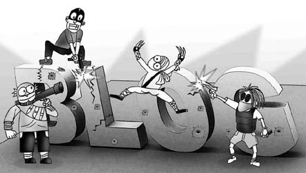

收音机坏了么？ @ Aug 28, 2007
音乐的节律与我们身体的节律趋向一致时，
更容易产生感情上的共鸣。

早晨的广播里说道：“不要总是算计别人，做人要厚道。总是算计别人，迟早是要还的。”
很久没有听广播，快一个月了吧？
听广播跟生理发育及审美发展差不多，在不断变化和成熟，去年我经常听雷雷娜娜早间节目，无厘头搞笑，笑完之后除了轻松心里什么也没能留下。想不起来什么时候开始喜欢听新闻，除了广播新闻还喜欢看电视新闻。回想过去听广播就是听里面的音乐流行歌曲，现在完全变化了。
差不多也是一个月了吧，搜索不到93.7和96.6广播频道，这两个是我比较喜欢听的新闻频道，在上班和回家的路上，这边新闻结束了更换另一个继续听，有时晚上回家晚了，路上听96.6频率10：30的《新周刊》，虽然那些稿件未必全部出自主持人之手，可她收集整理并读给那些或繁忙或孤单的听众，会有点收获。广播解决了快节奏生活下的各种问题。我们可以不阅读去听小说连载，可以不看报去听新闻，不了解文娱动态，广播提供了各种信息......现在，我觉得自己的耳朵少了某些声音，确有不适，是车上的收音机坏了么？
6 Responses to “收音机坏了么？”
2007-08-28
感觉中广播似乎只在行车中存在了!
现在几乎与之断交，N久不接触
2007-08-28
When TV fill modern life, the radio only lives in car. But I really don’t want the old 104.3 back.
2007-08-29
I listen to radio on the car as well. Some morning program is good. This morning they were talking about how to know Spring is here. It was happy to hear it because I know Spring is finally here now!
2007-08-30
除了行车，也就只有网络闲暇时听听。不过时常还是拧开收音机，信号不好，刺啦刺啦的声音。总比在网上听有感觉。
2007-08-30
奇怪,昨天这两个频率又恢复正常了~
2007-08-30
上面楼盘的人看来是不读书不看报啊,我们国家发生了这么大的事居然会不知道!!
国家广电总局已经向全国发出通报,责令江苏人民广播电台在8月10日中午12点必须立即停止937等9个频率的播出,因为这些频率全部没有经过批准而是非法广播。所以包括93.7在内的调频广播已经停止了。更可笑的是，江苏电台10日下午3点居然还举行“江苏播音网”也就是网上广播的开播仪式，由于副省长张桃林不知内情也到现场祝贺，谁知张副省长知道情况后当即离席而去。
广播是国家重要的舆论工具，开办一个频率必须得到国家广电总局的批准。可是，江苏电台却自说自话，随意开播，结果被国家广电总局发现了，被处理也就在情理之中。除了调频93.7，还有居家台（广播）、投资台（广播）、就业台（广播）、音乐台（广播）、江苏的士之声、爱乐广播等等
Leave A Reply
存档只读，评论已关闭。